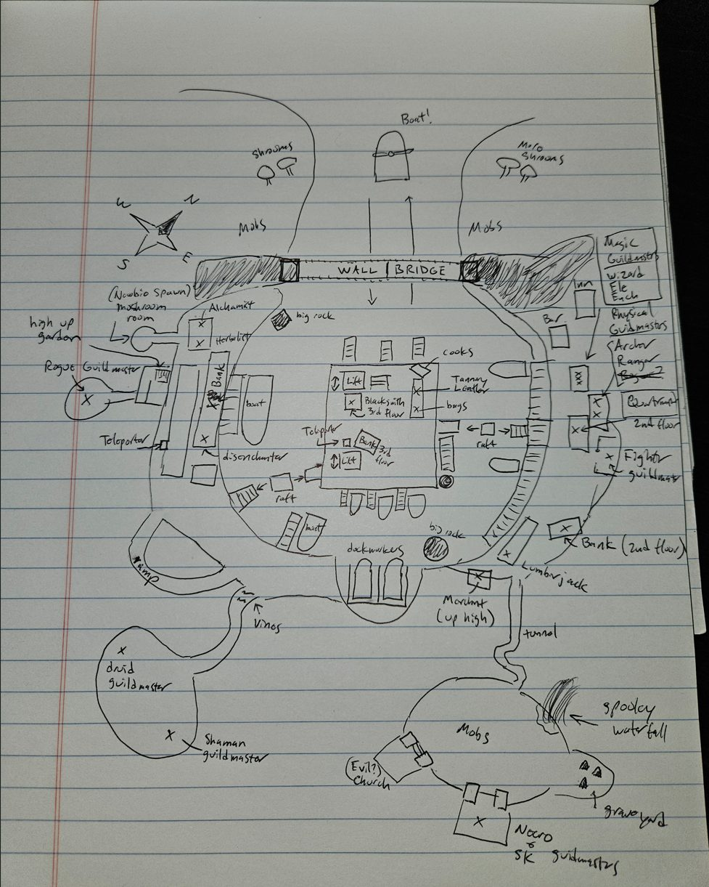
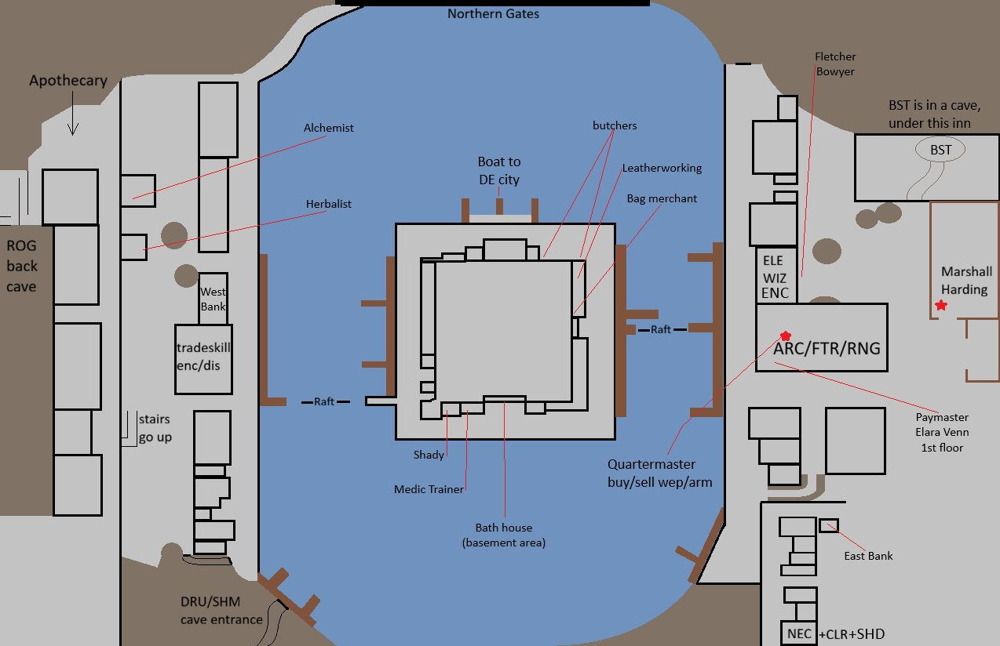
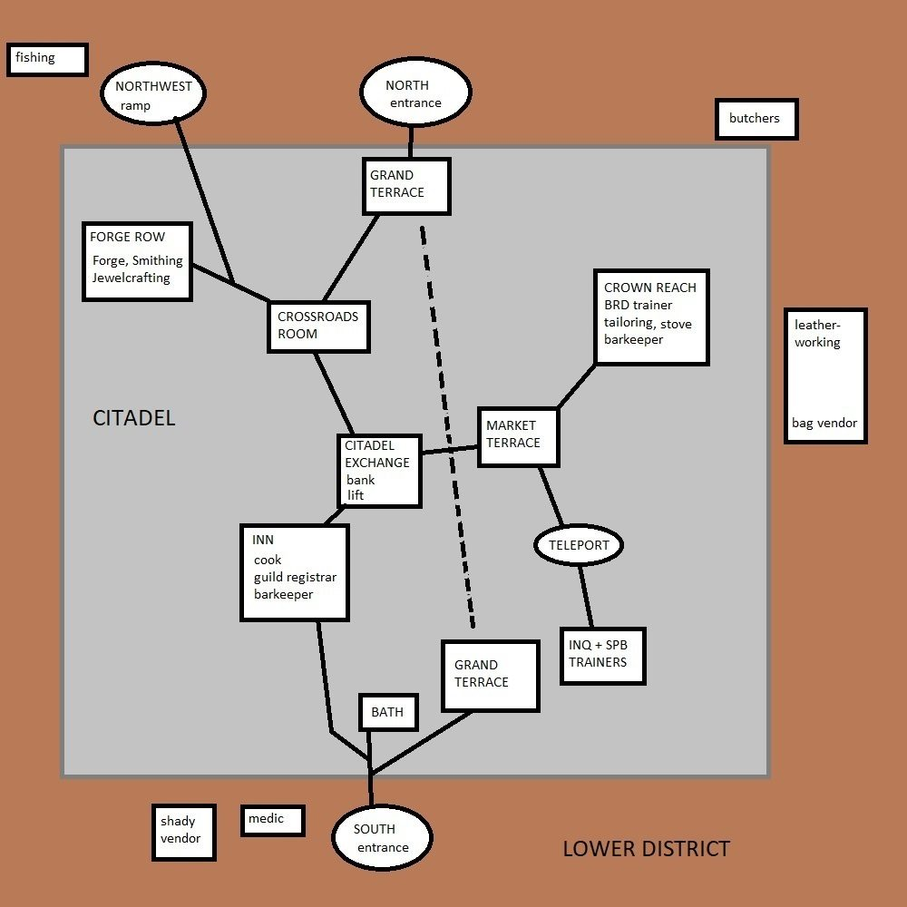

Underdocks
The Underdocks are the main starting zone for Deep Dwarf, Deep Elf, and Deep Gnome races.
Patch 0.30.2.4 (Oct 4) added fishing volumes and foraging tables here; 0.30.2.5 (Oct 7) re-enabled Delilah and a friendly undercap after reward fixes and added HC/Solo/Self-Found NPCs.
Map



Named mobs
| Named | Lvl | Race / class | Where | Known loot (hover) |
|---|---|---|---|---|
| The Sporefather | 13-14 | Mushroom | - | Ironroot Fists |
| Jumbe | 14 | Halfling | - | |
| Riddrick the Cursed | 14 | Wererat | - | Riddrick's Head |
| Belot | - | The Deepcut (North Gate East): the bandit camps, and inside the mine | Ring of the Blue Magus | |
| Jorlach the Fearless | - | The Deepcut (North Gate East), near the entrance | Jorlach's Head |
Mobs & NPCs (camps by level)
Rows with a level are huntable camps; rows without are usually town NPCs or not yet documented.
| Name | Lvl | Race | Class | Where | Notes |
|---|---|---|---|---|---|
| a decayed shadowbone | 1-2 | Skeleton | - | - | |
| a dusky rat | 1-2 | Rat | - | - | |
| a young shadewing | 1-2 | Bat | - | - | |
| an undercap morel | 1-2 | Shroom | - | - | |
| a deep beetle | 2-4 | Beetle | - | - | |
| a deepweb crawler | 2-3 | Spider | - | - | |
| a Deepcut miner | 3-5 | Humanoid | - | The Deepcut (North Gate East) | |
| a Delvestone miner | 3-5 | Humanoid | - | - | |
| a Deepcut overseer | 5-6 | Humanoid | - | The Deepcut (North Gate East) | |
| a greater shadowbone | 7-9 | Skeleton | - | - | |
| a wererat plaguespreader | 8-12 | Wererat | - | - | |
| a smuggler | 9-10 | Humanoid | - | - | |
| a wererat fanatic | 10-12 | Wererat | - | - | |
| a wererat fiend | 10-12 | Wererat | - | - | |
| a wererat lancer | 10-12 | Wererat | - | - | |
| a wererat stalker | 10-12 | Wererat | - | - | |
| an elder shadowbone | 10-12 | Skeleton | - | - | |
| Munk | 14 | Ogre | - | Lakeside walkway (north-east) | Butcher merchant for cooking. |
| an abominable ghoul | 18-20 | Ghoul | - | - | Shriveled Ghoul Heart |
| Barkeep Clyden | - | - | - | Crown Reach (5th floor), tailoring shop, basement theatre | Sells tavern goods. |
| Barkeeper Khordic | - | - | - | Crown Reach (5th floor), High Note | Sells tavern goods. |
| Berry | - | - | - | Market Terrace (4th floor) | Sells badly made shoes; has nothing to say. |
| Bruna Copperpot | - | Dwarf | - | Inn across from Citadel Exchange, behind bar | Cooking trainer. |
| Chef Ariand | - | - | - | Crown Reach (5th floor), tailoring shop, basement theatre | Sells food. |
| Girardi | - | - | - | Crown Reach (5th floor), High Note | Appears as "a miserable drunk". Refuses both a beer and a wine, and does not answer keywords; other NPCs say he will tell his story to anyone who listens. |
| Gudard Salnik | - | - | - | Crown Reach (5th floor), tailoring shop, second floor | Guards the door to the private residence. |
| Idris Mavri | - | - | - | Crown Reach (5th floor), tailoring shop | Sells thread. |
| Ivar Copperpot | - | Dwarf | - | Inn across from Citadel Exchange, behind bar | Sells cooking supplies. |
| Kadence Rhymer | - | - | - | Crown Reach (5th floor), High Note | Musician. Sings; has nothing to say. |
| Lady Valhassen | - | Human | - | Crown Reach (5th floor), tailoring shop, second floor | Owns the private residence; watches the theatre from the upper balcony, and is annoyed at being interrupted. |
| Lyriana Melodine | - | - | - | Crown Reach (5th floor), High Note | Musician. Sings; has nothing to say. |
| Nyssara Mesmerin | - | Human | - | Caster's Guild | Enchanter Spell Vendor |
| Tailor Gira | - | - | - | Crown Reach (5th floor), tailoring shop | Sells patterns. |
| Viora Vintner | - | - | - | Crown Reach (5th floor), High Note | Waitress; sells tavern goods, and says nothing. |
| Xeldrin Waymark | - | Human | - | - | Ranger spell and ability scroll vendor |
| Yasmin Selvar | - | - | - | Crown Reach (5th floor), tailoring shop | Tailoring trainer. |
| a serving wench | - | - | - | Crown Reach (5th floor), tailoring shop, basement theatre | Sells beer. |
Quests
| Quest | Reward | Giver | Min lvl |
|---|---|---|---|
| Cleric Starter Quest (Underdocks) | Worn Servant Buckler | Soren Akedd , Sister Marwen | 1 |
| Druid Starter Quest (Underdocks) | Rotting Rootstaff | Luskmit | 1 |
| Necromancer Starter Quest (Underdocks) | Oblate's Tome | Soren Akedd | 1 |
| Shadow Knight Starter Quest (Underdocks) | Worn Cassock, Initiate's Dull Greatsword | Soren Akedd | 1 |
| Shaman Starter Quest (Underdocks) | Shredded Cloak | Picci Manifold | 1 |
| Underdocks Starter Quest | Musty Tunic | Marshal Harding | 1 |
| Bounty for Simrut | Ratkiller | Simrut the Green | 12 |
| Deepcut Bandit Bounty | 8 Silver + EXP | Traven Keldress | 8 |
| Find Delilah's Pet | Giant Turtle Shell Shield | Delilah | 1 |
| Mining Picks for Hull | Patched Rawhide | Hull Orbel | 1 |
| Mushroom Farmers Bounty | 2 Silver | Mikra Velrane | 1 |
| Syrsil's Stolen Package | Unknown | Senior Apprentice Syrsil | ? |
| The Small Problem of Deepcut Arsonists | 1 Silver + Faction | Guard Darek | 1 |
| Wererat Fight Club | 50 Copper + Faction | Draznax | 4 |
Gear that drops here
| Slot | Item | Key stats (wiki) | How to get | Lvl | Classes |
|---|---|---|---|---|---|
| Bat Wing | no stats listed on wiki | Quest: Druid Starter Quest (Faelindral) (Sylvarya Starveil, Faelindral, min lvl 1) Quest: Druid Starter Quest (Night Harbor) (Rolan Talmula, Night Harbor, min lvl 1) Quest: Ranger Starter Quest (Night Harbor) (-, Night Harbor, min lvl 1) Drop: a desert bat (lvl 1) — Night Harbor, Noob Yard | 1 | DRU ENC RNG SHM WIZ | |
| Bone Chips | no stats listed on wiki | Quest: Bone Chips for Moon Dances (Moon Dances, Faelindral, min lvl 1) Quest: Bone Chips for Squire Ryland (Squire Ryland, Night Harbor, min lvl 1) Quest: Druid Starter Quest (Faelindral) (Sylvarya Starveil, Faelindral, min lvl 1) Quest: Find Delilah's Pet (Delilah, Underdocks, min lvl 1) | 1 | NEC SHD | |
| Primary | Rusty Great Scythe | DMG 8 / DLY 46 | Drop: A rotting skeleton (lvl 1) — Night Harbor, Noob Yard Drop: a market peddler (lvl unconfirmed) — Night Harbor Drop: A skeletal warrior (lvl 4 - 11) — Tomb of the Last Wyrmsbane, - Drop: a skeletal monk (lvl -) — Tomb of the Last Wyrmsbane, - | 1 | BST DRU FTR INQ NEC RNG SHD SPB |
| Primary | Rusty Long Spear | DMG 9 / DLY 48 | Drop: an ashira warrior (lvl 6-7) — Sungreet Strand, - Drop: a Bloodynose quarreler (lvl ~8-10) — Sungreet Strand, Tel Ekir Goblin Entrance Drop: an ashira lookout (lvl -) — Sungreet Strand, - Drop: an ashira shaman (lvl -) — Sungreet Strand, - | 1 | ARC BRD BST FTR INQ RNG ROG SHD SHM |
| Primary | Rusty Maul | DMG 10 / DLY 52 | Drop: A skeletal cavalier (lvl 6 - 10) — Tomb of the Last Wyrmsbane, - Drop: A skeletal fighter (lvl 3 - 10) — Tomb of the Last Wyrmsbane, - Drop: a skeletal deacon (lvl -) — Tomb of the Last Wyrmsbane, - Drop: a skeletal warrior (lvl 4 - 11) — Tomb of the Last Wyrmsbane, - | 1 | BRD BST CLR DRU FTR INQ MNK PAL RNG ROG SHD SHM SPB |
| Primary, Secondary | Rusty Scimitar | DMG 5 / DLY 36 | Drop: A rotting skeleton (lvl 1) — Night Harbor, Noob Yard Drop: a goblin troublemaker (lvl 9) — Night Harbor, Docks Drop: a stumbling zombie (lvl unconfirmed) — Shaded Dunes Drop: a skeleton (lvl unconfirmed) — Shaded Dunes | 1 | ARC BRD BST DRU FTR INQ PAL RNG ROG SHD SPB WIZ |
| Primary, Secondary | Rusty Scythe | DMG 4 / DLY 28 | Drop: a skeleton (lvl unconfirmed) — Shaded Dunes Drop: a bandit (lvl 10-13) — Shaded Dunes, - Drop: an ashira warrior (lvl -) — Shaded Dunes, - Drop: a wererat (lvl unconfirmed) — Shaded Dunes | 1 | BST DRU FTR INQ NEC RNG SHD SPB |
| Primary, Secondary | Rusty Shortsword | DMG 4 / DLY 26 | Vendor: A scrap dealer — Evershade Weald; A used weapons dealer — Night Harbor, Shallow Shoals; Evershade Weald Drop: an ashira warrior (lvl 6-7) — Sungreet Strand, - Drop: an ashira lookout (lvl -) — Sungreet Strand, - Drop: a hired thug (lvl 9-10) — Sungreet Strand, Ameen Farm | 1 | ARC BRD BST FTR INQ PAL RNG ROG SHD SHM SPB WIZ |
| Secondary | Rusty Tower Shield | AC 4 | Drop: an ashira lookout (lvl -) — Sungreet Strand, - Drop: a Bloodynose quarreler (lvl ~8-10) — Sungreet Strand, Tel Ekir Goblin Entrance Drop: an ashira warrior (lvl 6-7) — Sungreet Strand, - Drop: a Bloodynose fumer (lvl ~8-10) — Sungreet Strand, Tel Ekir Goblin Entrance | 1 | FTR INQ PAL SHD |
| Primary | Rusty War Lance | DMG 9 / DLY 48 | Drop: an ashira warrior (lvl 6-7) — Sungreet Strand, - Drop: a hired thug (lvl 9-10) — Sungreet Strand, Ameen Farm Drop: a rotting skeleton (lvl unconfirmed) — Sungreet Strand Drop: an ashira lookout (lvl -) — Sungreet Strand, - | 1 | FTR INQ PAL SHD |
| Feet | Tattered Cloth Boots | AC 1 | Drop: A rotting skeleton (lvl 1) — Night Harbor, Noob Yard Drop: an ashira scout (lvl 2) — Night Harbor, Noob Yard Drop: a goblin drunk (lvl -) — Night Harbor, Docks Drop: a goblin squatter (lvl 10) — Night Harbor, Docks | 1 | All classes |
| Wrist | Tattered Cloth Bracer | AC 1 | Drop: A skeletal fighter (lvl 3 - 10) — Tomb of the Last Wyrmsbane, - Drop: A skeletal warrior (lvl 4 - 11) — Tomb of the Last Wyrmsbane, - Drop: A skeletal cleric (lvl -) — Tomb of the Last Wyrmsbane, - Drop: A skeletal knight (lvl -) — Tomb of the Last Wyrmsbane, - | 1 | All classes |
| Hands | Tattered Cloth Gloves | AC 1 | Drop: A rotting skeleton (lvl 1) — Night Harbor, Noob Yard Drop: a begrudging farmer (lvl unconfirmed) — Night Harbor Drop: a stumbling skeleton (lvl 14) — Night Harbor, Crypt (Night) Drop: a goblin drunk (lvl -) — Night Harbor, Docks | 1 | All classes |
| Neck | Tattered Cloth Gorget | AC 1 | Drop: A rotting skeleton (lvl 1) — Night Harbor, Noob Yard Drop: a goblin drunk (lvl -) — Night Harbor, Docks Drop: a goblin troublemaker (lvl 9) — Night Harbor, Docks Drop: a goblin squatter (lvl 10) — Night Harbor, Docks | 1 | All classes |
| Legs | Tattered Cloth Pantaloons | AC 1 | Drop: A skeletal fighter (lvl 3 - 10) — Tomb of the Last Wyrmsbane, - Drop: A skeletal warrior (lvl 4 - 11) — Tomb of the Last Wyrmsbane, - Drop: A skeletal defender (lvl -) — Tomb of the Last Wyrmsbane, - Drop: A skeletal cavalier (lvl 6 - 10) — Tomb of the Last Wyrmsbane, - | 1 | All classes |
| Secondary | Worn Buckler | AC 2 | Drop: an ashira shaman (lvl -) — Sungreet Strand, - Drop: an ashira lookout (lvl -) — Sungreet Strand, - Drop: an ashira warrior (lvl 6-7) — Sungreet Strand, - Drop: a Bloodynose scarer (lvl ~8-10) — Sungreet Strand, Tel Ekir Goblin Entrance | 1 | BRD BST CLR DRU FTR INQ PAL RNG ROG SHD SHM SPB |
| Bag | Mushroom Basket | no stats listed on wiki | Quest: Druid Starter Quest (Underdocks) (-, Underdocks, min lvl 1) Drop: Brugg Mulcher (lvl unconfirmed) — Underdocks Drop: Rotten Mushroom (lvl unconfirmed) — Underdocks | 1 | class unconfirmed |
| Primary | Broken Mining Pick | DMG 7 / DLY 40 | Drop: a Deepcut miner (lvl 3-5) — Underdocks, The Deepcut (North Gate East) Drop: a Delvestone miner (lvl 3-5) — Underdocks, - | 3 | class unconfirmed |
| Primary | Delvestone Mining Pick | DMG 7 / DLY 40 | Quest: Mining Picks for Hull (Hull Orbel, Underdocks) Quest: Underdocks Drop: a Deepcut miner (lvl 3-5) — Underdocks, The Deepcut (North Gate East) Drop: a Delvestone miner (lvl 3-5) — Underdocks, - | 3 | All classes |
| Secondary | Rusty Kite Shield | AC 3 | Drop: an ashira shaman (lvl -) — Sungreet Strand, - Drop: an ashira warrior (lvl 6-7) — Sungreet Strand, - Drop: a Bloodynose scarer (lvl ~8-10) — Sungreet Strand, Tel Ekir Goblin Entrance Drop: a filthy henchman (lvl unconfirmed) — Sungreet Strand | 3 | BRD CLR FTR INQ PAL RNG SHD |
| Waist | Tattered Rawhide Belt | AC 1 | Drop: A skeletal warrior (lvl 4 - 11) — Tomb of the Last Wyrmsbane, - Drop: A skeletal monk (lvl -) — Tomb of the Last Wyrmsbane, - Drop: a skeletal cleric (lvl -) — Tomb of the Last Wyrmsbane, - Drop: a risen zombie (lvl -) — Tomb of the Last Wyrmsbane, - | 3 | ARC BRD BST CLR DRU FTR INQ MNK PAL RNG ROG SHD SHM SPB |
| Back | Tattered Rawhide Cloak | AC 1 | Drop: A skeletal marksman (lvl -) — Tomb of the Last Wyrmsbane, - Drop: A skeletal warrior (lvl 4 - 11) — Tomb of the Last Wyrmsbane, - Drop: A skeletal cavalier (lvl 6 - 10) — Tomb of the Last Wyrmsbane, - Drop: A skeletal cleric (lvl -) — Tomb of the Last Wyrmsbane, - | 3 | ARC BRD BST CLR DRU FTR INQ MNK PAL RNG ROG SHD SHM SPB |
| Wrist | Tattered Rawhide Bracer | AC 2 | Drop: A skeletal warrior (lvl 4 - 11) — Tomb of the Last Wyrmsbane, - Drop: A skeletal defender (lvl -) — Tomb of the Last Wyrmsbane, - Drop: A skeletal marksman (lvl -) — Tomb of the Last Wyrmsbane, - Drop: a skeletal priest (lvl -) — Tomb of the Last Wyrmsbane, - | 4 | ARC BRD BST CLR DRU FTR INQ MNK PAL RNG ROG SHD SHM SPB |
| Face | Tattered Rawhide Mask | AC 1 | Drop: A skeletal marksman (lvl -) — Tomb of the Last Wyrmsbane, - Drop: A skeletal warrior (lvl 4 - 11) — Tomb of the Last Wyrmsbane, - Drop: A skeletal cavalier (lvl 6 - 10) — Tomb of the Last Wyrmsbane, - Drop: a skeletal monk (lvl -) — Tomb of the Last Wyrmsbane, - | 4 | ARC BRD BST CLR DRU FTR INQ MNK PAL RNG ROG SHD SHM SPB |
| Range | Worn Fine Wood Bow | DMG 10 / DLY 40 | Named drop: Researcher Harseal (lvl 16) — Ancient Crypt, - Drop: a skeletal acolyte (lvl 17) — Ancient Crypt, - Named drop: Brahson the Butcher (lvl ~17) — Ancient Crypt, - Drop: a skeletal soldier (lvl 17) — Ancient Crypt, - | 6 | ARC BST FTR INQ PAL RNG ROG SHD SPB |
| Primary, Secondary | Rusty Iron Scimitar | DMG 9 / DLY 36 | Drop: a Witchguard cultor (lvl ~39+) — Shallow Shoals, Black Shoals Fortress Drop: a Witchguard defiler (lvl unconfirmed) — Shallow Shoals Drop: a Witchguard venator (lvl unconfirmed) — Shallow Shoals Drop: a Witchguard myrmidon (lvl unconfirmed) — Shallow Shoals | 27 | ARC BRD BST DRU FTR INQ PAL RNG ROG SHD SPB WIZ |
| Range | Mycelial Token | WIS +2, HP +5, Mana +5 | Drop: Sporcinius (lvl unconfirmed) — Underdocks | any / ? | All classes |
| Chest | Royalcap Chestguard | AC 16, STR +3, HP +10 | Drop: Sporcinius (lvl unconfirmed) — Underdocks | any / ? | BRD CLR FTR INQ PAL RNG ROG SHD SHM |
| Primary | Sporethorn | DMG 8 / DLY 35, STA +1, INT +3 | Drop: Sporcinius (lvl unconfirmed) — Underdocks | any / ? | ARC BRD BST ELE ENC FTR INQ NEC RNG ROG SHM SPB WIZ |
Merchants (wiki list)
| Where | Merchant |
|---|---|
| Around the north-east | Munk - buys and sells monster parts. |
| Cartalia Wain - trains Wagoneering. | |
| a produce vendor - buys and sells vegetables. | |
| a butcher - butchers' shop on the north-east corner; Ebba Dungor and Apprentice Millen both buy and sell meat. | |
| Leatherworking shop (open-pillar layout; north-east side of the citadel, around the corner from the butchers' shop) | Tanner Paluvian - trains Tanning. |
| Graf Tanswell - buys and sells pelts. | |
| Halagar Hidehand - sells leatherworking patterns. | |
| Tavia Tawyer - sells thread, leatherworking kits, seam ripper, and skinning knives. | |
| Leatherworker Keiros - trains Leatherworking. | |
| Ruk Sacksnatch - sells backpacks, pouches, and satchels. | |
| Healers' clinic (west of the south entrance) | Assistant Norwan - sells bandages. |
| Medic Florina - trains Bind Wound (upstairs, on the building's second floor) . | |
| South-west of the citadel | Gaden Shale - buys everything, at a reduced price. |
| Hilari Hidecraft - sells rawhide goods. | |
| Stevran Understock - sells various goods, including backpacks, lanterns, and pouches (the building's second floor is currently empty) . | |
| The Balanced Blade | Keen Strikemore - buys and sells the shop's inventory; pays more for weapons than the general goods merchant. |
| a pattern maker - has a vendor menu (no stock observed). | |
| a weaponsmithing trainer - a Blacksmithing trainer. "Weaponsmith" is another name for the same role, not a separate trainable class. | |
| Deltan's Smeltery (smelter and anvil are outside, on the north side) | Deltan - sells gems, schematics for copper armor, and several kinds of beetle carapace; also a smithing hammer, smithing spliers, and rivet cutters. |
| Variagruss Grinhelm - sells armor schematics. | |
| Jedara Kilnwright - smelting trainer. | |
| Blacksmith Hargrul - blacksmithing trainer; stands outside by the smelter. | |
| Stoneshiner's Gems (left of the smelter, a little further north) | Sorgen Stoneshiner - jewelcrafting trainer. |
| Mardah Stoneshiner - sells jeweller's molds and gems. | |
| Forge's Bounty | Link Kerfshorn - sells bronze chain armor. |
| Rivette Ironclave - sells bronze plate armor. | |
| Citadel Exchange | Banker Nethir - banker. |
| Banker Rishopo - banker. | |
| Banker Vireya - banker. | |
| The Inn | Innkeeper Adrella - the Inn's top floor (its first floor); says and sells nothing. |
| Ivar Copperpot - in the backroom of the first floor behind the bar; sells cooking supplies. | |
| Bruna Copperpot - in the backroom of the first floor behind the bar; Cooking trainer. | |
| Barkeeper Ravik - in the tavern below; sells food and drink. | |
| Senior Apprentice Syrsil - in the tavern below; gives a quest to recover her master's stolen package. | |
| an opportunistic adventurer - retrieves your corpse for a price. | |
| Market Terrace | Berry - sells badly made shoes; has nothing to say. |
| High Note (the open-faced tavern at the entrance to the floor; resting here grants the rested bonus) | Barkeeper Khordic - sells tavern goods. |
| Viora Vintner - waitress; sells tavern goods, and says nothing. | |
| Kadence Rhymer - one of two musicians. Sings; has nothing to say. | |
| Lyriana Melodine - one of two musicians. Sings; has nothing to say. | |
| a miserable drunk - refuses both a beer and a wine, and does not answer keywords. Other NPCs say he will tell his story to anyone who listens. | |
| snooty patrons - fill the tavern, trading Underdocks gossip. | |
| Tailoring shop (north of the tavern, past an empty store; the shop itself has no name yet) | Tailor Gira - sells patterns. |
| Idris Mavri - sells thread. | |
| Yasmin Selvar - Tailoring trainer. | |
| Tailoring shop, second floor | Gudard Salnik - guards the door to the private residence. |
| Lady Valhassen - the residence's owner; seen here once, and annoyed at being interrupted. | |
| Tailoring shop, basement theatre (a stage with seating and a bar; Lady Valhassen watches from the upper balcony) | Barkeep Clyden - sells tavern goods. |
| Chef Ariand - sells food. | |
| a serving wench - sells beer. | |
| a gossiping reveler , a drunk aristocrat , an aspiring actor (many) - present in the theatre. |
Dangers
- fact Highest-level named on the wiki list: Riddrick the Cursed (14), Jumbe (14), The Sporefather (13-14).
- fact Monster types (wiki): Spiders, Bats, Rats, Wererats, Beetles, Skeletons, Shrooms, Humanoids.
- strategy The zone spans levels 1–50, so higher mobs share the map with low ones; check con colors before pulling near the named above.
Travel (wiki)
- Night Harbor
- Ail'Vorith (via boat through Caves of Irem and Great Cavern Sea)
- Caves of Irem - north along river (a long way) or by boat.
fact Listed in the wiki zone infobox; boat and portal stops are as written there.